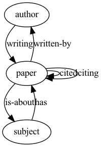
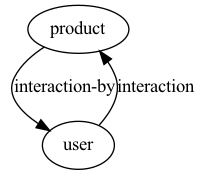

# Each value of the dictionary is a list of edge tuples.# Nodes are integer IDs starting from zero. Nodes IDs of different types have# separate countings.import torchimport dgl## /Users/lrabalski1/miniforge3/envs/tensorflow_mac/lib/python3.8/site-packages/scipy/__init__.py:146: UserWarning: A NumPy version >=1.16.5 and <1.23.0 is required for this version of SciPy (detected version 1.23.4## warnings.warn(f"A NumPy version >={np_minversion} and <{np_maxversion}"ratings = dgl.heterograph( {('user', '+1', 'movie') : [(0, 0), (0, 1), (1, 0)], ('user', '-1', 'movie') : [(2, 1)]})ratings## Graph(num_nodes={'movie': 2, 'user': 3},## num_edges={('user', '+1', 'movie'): 3, ('user', '-1', 'movie'): 1},## metagraph=[('user', 'movie', '+1'), ('user', 'movie', '-1')])
saving graph
In order to save graph as object, very convenient method is to use pickle.
Show the code
import pickleoutput_file ='builded_graph.pkl'directory ='input/'withopen(directory + output_file, 'rb') as f: g = pickle.load(f)#loading saved graphwithopen(directory + output_file, 'rb') as f: sp_matrix = pickle.load(f)
To create a more realistic heterograph let’s use the ACM dataset. ## Graphs Dataset can be downloaded from here. It’s stored in mat (matrix) object. Within which we can find object/matrices stored in a compresed sparsed format. More about further.
Many different ways to store sparsed matrices may be find in scipy documentation.
For us most important will be csr_matrix and csc_matrix.
CSC format is almost identical, except that values are indexed first by column with a column-major order. Usually, the CSC is used when there are more rows than columns. On the contrary, the CSR works better for a ‘wide’ format. So, her is taking CSR as an example here.
Below short example how sparsed matrices can be handle with scipy package.
Show the code
import numpy as npfrom scipy.sparse import csr_matrix, csc_matrixarr = np.array([[0, 0, 0], [0, 0, 1], [1, 2, 0]])arr_csr = csr_matrix(arr)arr_csc = csc_matrix(arr)print(type(arr_csr))## <class 'scipy.sparse.csr.csr_matrix'>print(type(arr_csc))# `CSC` format is almost identical, except that values are indexed first by column with a column-major order. Usually, the `CSC` is used when there are more rows than columns. On the contrary, the `CSR` works better for a ‘wide’ format. So, her is taking CSR as an example here## <class 'scipy.sparse.csc.csc_matrix'>print(arr_csr)## (1, 2) 1## (2, 0) 1## (2, 1) 2print(arr_csc)# however in order to get access ti those indexes need to use method to_coo.## (2, 0) 1## (2, 1) 2## (1, 2) 1arr_csr.tocoo().row## array([1, 2, 2], dtype=int32)arr_csr.tocoo().col#Viewing stored data (not the zero items) with the data property## array([2, 0, 1], dtype=int32)print(arr_csr.data)## [1 1 2]print(arr_csc.data)#Counting nonzeros with the count_nonzero() method:## [1 2 1]print(arr_csr.count_nonzero())## 3print(arr_csc.count_nonzero)## <bound method _data_matrix.count_nonzero of <3x3 sparse matrix of type '<class 'numpy.int64'>'## with 3 stored elements in Compressed Sparse Column format>>print(arr_csr.toarray())## [[0 0 0]## [0 0 1]## [1 2 0]]print(arr_csc.todense())## [[0 0 0]## [0 0 1]## [1 2 0]]
In order to visualize the interactions (edges) between nodes let use following function.
Show the code
import pygraphviz as pgvdef plot_graph(nxg, plot_name): ag = pgv.AGraph(strict=False, directed=True)for u, v, k in nxg.edges(keys=True): ag.add_edge(u, v, label=k) ag.layout('dot') ag.draw(plot_name+'.png')
import torch# Unfortunately following code no longer worksG = dgl.heterograph({ ('paper', 'written-by', 'author') : data['PvsA'], ('author', 'writing', 'paper') : data['PvsA'].transpose(), ('paper', 'citing', 'paper') : data['PvsP'], ('paper', 'cited', 'paper') : data['PvsP'].transpose(), ('paper', 'is-about', 'subject') : data['PvsL'], ('subject', 'has', 'paper') : data['PvsL'].transpose(), })# we need to a little bit tweak the code the get the same result as above.## Error in py_call_impl(callable, dots$args, dots$keywords): dgl._ffi.base.DGLError: dgl.heterograph no longer supports graph construction from a SciPy sparse matrix, use dgl.from_scipy instead.G = dgl.heterograph({ ('paper', 'written-by', 'author') : (torch.tensor(data['PvsA'].tocoo().col),torch.tensor(data['PvsA'].tocoo().row )), ('author', 'writing', 'paper') : (torch.tensor(data['PvsA'].tocoo().row) ,torch.tensor(data['PvsA'].tocoo().col)), ('paper', 'citing', 'paper') : (torch.tensor(data['PvsP'].tocoo().col),torch.tensor(data['PvsP'].tocoo().row )), ('paper', 'cited', 'paper') : (torch.tensor(data['PvsP'].tocoo().row) ,torch.tensor(data['PvsP'].tocoo().col)), ('paper', 'is-about', 'subject') : (torch.tensor(data['PvsL'].tocoo().col),torch.tensor(data['PvsL'].tocoo().row )), ('subject', 'has', 'paper') : (torch.tensor(data['PvsL'].tocoo().row) ,torch.tensor(data['PvsL'].tocoo().col)) })plot_graph(nxg=G.metagraph(),plot_name='more_complicated_graph')

pandas method
On github repository we can find a method allowing for building graphs using pandas dataphrame.
Show the code
import numpy as npimport pandas as pdimport syssys.path.insert(1, repo_directory)from builder import PandasGraphBuilder## Error in py_call_impl(callable, dots$args, dots$keywords): ModuleNotFoundError: No module named 'builder'users=pd.DataFrame(data=range(1,101), columns=['user_id'])products=pd.DataFrame(data=range(1,50), columns=['product_id'])interactions=pd.DataFrame(data={'user_id': np.random.choice(users.user_id,1000,replace=True),'product_id' :np.random.choice(products.product_id,1000,replace=True)} )graph_builder = PandasGraphBuilder()## Error in py_call_impl(callable, dots$args, dots$keywords): NameError: name 'PandasGraphBuilder' is not definedgraph_builder.add_entities(users, 'user_id', 'user')## Error in py_call_impl(callable, dots$args, dots$keywords): NameError: name 'graph_builder' is not definedgraph_builder.add_entities(products, 'product_id', 'product')## Error in py_call_impl(callable, dots$args, dots$keywords): NameError: name 'graph_builder' is not definedgraph_builder.add_binary_relations(interactions, 'user_id','product_id', 'interaction')## Error in py_call_impl(callable, dots$args, dots$keywords): NameError: name 'graph_builder' is not definedgraph_builder.add_binary_relations(interactions, 'product_id','user_id', 'interaction-by')## Error in py_call_impl(callable, dots$args, dots$keywords): NameError: name 'graph_builder' is not definedprint('starting graph building')## starting graph buildingg = graph_builder.build()## Error in py_call_impl(callable, dots$args, dots$keywords): NameError: name 'graph_builder' is not definedplot_graph(nxg=g.metagraph(),plot_name='pandas_graph')## Error in py_call_impl(callable, dots$args, dots$keywords): NameError: name 'g' is not defined

Source Code
---title: "DGL graph datastructure"categories: ["DGL"]tags: ["DGL", "graph", "graph datastructure", "compressed sparsed matrix"]toc: TRUE---```{r include=FALSE}#[url](https://www.jianshu.com/p/767950b560c4)``````{r include =FALSE}knitr::opts_chunk$set(#fig.width=12, fig.height=4,out.width ='100%' ) knitr::opts_chunk$set(include =TRUE, #When `include = FALSE`, this whole code chunk is excluded in the output, but note that it will still be evaluated if `eval = TRUE`. When you are trying to set `echo = FALSE`, `results = 'hide'`, `warning = FALSE`, and `message = FALSE`, chances are you simply mean a single option `include = FALSE` instead of suppressing different types of text output individually.warning =FALSE,message =FALSE,collapse=TRUE,error=TRUE )options(scipen=999)``````{r, include =FALSE}library(reticulate)myenvs=conda_list()envname=myenvs$name[5]use_condaenv(envname, required =TRUE)``````{python, include =FALSE}data_file_path='/Users/lrabalski1/Desktop/prv/data/'repo_directory ='/Users/lrabalski1/Desktop/Mrowisko/000Pracownicy/000_Rabalski_Lukasz/2022.05.19 graf/repo projektu/graph-recommendator/pinsage/'```# Creating Graph dataVery simple example below```{python}# Each value of the dictionary is a list of edge tuples.# Nodes are integer IDs starting from zero. Nodes IDs of different types have# separate countings.import torchimport dglratings = dgl.heterograph( {('user', '+1', 'movie') : [(0, 0), (0, 1), (1, 0)], ('user', '-1', 'movie') : [(2, 1)]})ratings```## saving graphIn order to save graph as object, very convenient method is to use `pickle.````{python, eval=FALSE}import pickleoutput_file ='builded_graph.pkl'directory ='input/'withopen(directory + output_file, 'rb') as f: g = pickle.load(f)#loading saved graphwithopen(directory + output_file, 'rb') as f: sp_matrix = pickle.load(f)```To create a more realistic heterograph let's use the ACM dataset. \## Graphs Dataset can be downloaded from [here](https://www.aminer.org/citation). It's stored in mat (matrix) object. Within which we can find object/matrices stored in a `compresed sparsed` format. More about further.```{python}import scipy.ioimport urllib.requestdata = scipy.io.loadmat(data_file_path+'ACM.mat')```## compresed sparsed matrixMany different ways to store `sparsed matrices` may be find in scipy [documentation](https://docs.scipy.org/doc/scipy/reference/sparse.html).For us most important will be `csr_matrix` and `csc_matrix`.CSC format is almost identical, except that values are indexed first by column with a column-major order. Usually, the CSC is used when there are more rows than columns. On the contrary, the CSR works better for a 'wide' format. So, her is taking CSR as an example here.Below short example how `sparsed matrices` can be handle with `scipy` package.```{python}import numpy as npfrom scipy.sparse import csr_matrix, csc_matrixarr = np.array([[0, 0, 0], [0, 0, 1], [1, 2, 0]])arr_csr = csr_matrix(arr)arr_csc = csc_matrix(arr)print(type(arr_csr))print(type(arr_csc))# `CSC` format is almost identical, except that values are indexed first by column with a column-major order. Usually, the `CSC` is used when there are more rows than columns. On the contrary, the `CSR` works better for a ‘wide’ format. So, her is taking CSR as an example hereprint(arr_csr)print(arr_csc)# however in order to get access ti those indexes need to use method to_coo.arr_csr.tocoo().rowarr_csr.tocoo().col#Viewing stored data (not the zero items) with the data propertyprint(arr_csr.data)print(arr_csc.data)#Counting nonzeros with the count_nonzero() method:print(arr_csr.count_nonzero())print(arr_csc.count_nonzero)print(arr_csr.toarray())print(arr_csc.todense())```## SP matrix methods### bipartite_from_scipy```{python}import scipy.sparse as spsp_matrix = data['PvsA']print(type(sp_matrix))print('#Papers:', sp_matrix.shape[0])print('#Authors:',sp_matrix.shape[1])print('#Links:', sp_matrix.nnz)# ways of populating graph with coo_matrixpp_g = dgl.bipartite_from_scipy(sp_matrix, utype='paper', etype='written-by', vtype='author')pp_g.is_homogeneousprint(pp_g.number_of_nodes())print(pp_g.number_of_edges())print(pp_g.successors(3))print('Node types:', pp_g.ntypes)print('Edge types:', pp_g.etypes)print('Canonical edge types:', pp_g.canonical_etypes)```In order to visualize the interactions (edges) between nodes let use following function.```{python}import pygraphviz as pgvdef plot_graph(nxg, plot_name): ag = pgv.AGraph(strict=False, directed=True)for u, v, k in nxg.edges(keys=True): ag.add_edge(u, v, label=k) ag.layout('dot') ag.draw(plot_name+'.png')``````{python}plot_graph(nxg=pp_g.metagraph(),plot_name='simple_graph')```### heterographUsing ACM dataset```{python}import torch# Unfortunately following code no longer worksG = dgl.heterograph({ ('paper', 'written-by', 'author') : data['PvsA'], ('author', 'writing', 'paper') : data['PvsA'].transpose(), ('paper', 'citing', 'paper') : data['PvsP'], ('paper', 'cited', 'paper') : data['PvsP'].transpose(), ('paper', 'is-about', 'subject') : data['PvsL'], ('subject', 'has', 'paper') : data['PvsL'].transpose(), })# we need to a little bit tweak the code the get the same result as above.G = dgl.heterograph({ ('paper', 'written-by', 'author') : (torch.tensor(data['PvsA'].tocoo().col),torch.tensor(data['PvsA'].tocoo().row )), ('author', 'writing', 'paper') : (torch.tensor(data['PvsA'].tocoo().row) ,torch.tensor(data['PvsA'].tocoo().col)), ('paper', 'citing', 'paper') : (torch.tensor(data['PvsP'].tocoo().col),torch.tensor(data['PvsP'].tocoo().row )), ('paper', 'cited', 'paper') : (torch.tensor(data['PvsP'].tocoo().row) ,torch.tensor(data['PvsP'].tocoo().col)), ('paper', 'is-about', 'subject') : (torch.tensor(data['PvsL'].tocoo().col),torch.tensor(data['PvsL'].tocoo().row )), ('subject', 'has', 'paper') : (torch.tensor(data['PvsL'].tocoo().row) ,torch.tensor(data['PvsL'].tocoo().col)) })plot_graph(nxg=G.metagraph(),plot_name='more_complicated_graph')```## pandas methodOn [github repository](https://github.com/yoonjong12/pinsage/blob/main/builder.py) we can find a method allowing for building graphs using pandas dataphrame.```{python}import numpy as npimport pandas as pdimport syssys.path.insert(1, repo_directory)from builder import PandasGraphBuilderusers=pd.DataFrame(data=range(1,101), columns=['user_id'])products=pd.DataFrame(data=range(1,50), columns=['product_id'])interactions=pd.DataFrame(data={'user_id': np.random.choice(users.user_id,1000,replace=True),'product_id' :np.random.choice(products.product_id,1000,replace=True)} )graph_builder = PandasGraphBuilder()graph_builder.add_entities(users, 'user_id', 'user')graph_builder.add_entities(products, 'product_id', 'product')graph_builder.add_binary_relations(interactions, 'user_id','product_id', 'interaction')graph_builder.add_binary_relations(interactions, 'product_id','user_id', 'interaction-by')print('starting graph building')g = graph_builder.build()plot_graph(nxg=g.metagraph(),plot_name='pandas_graph')```